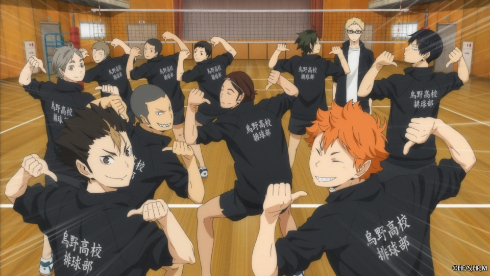
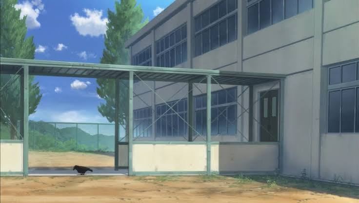
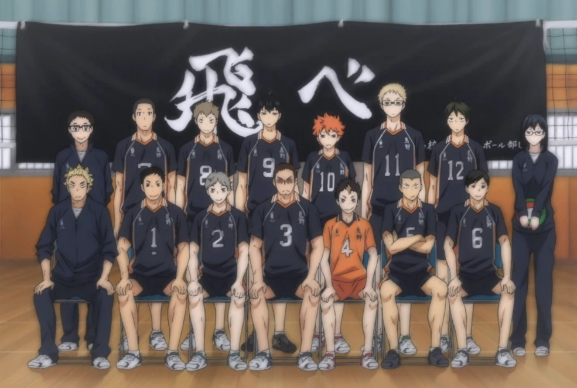

KARASUNO HIGH SCHOOL
Fly, Karasuno!

Klub Bola Voli SMA Karasuno adalah tim voli asal Prefektur Miyagi yang pernah
mengecap masa keemasan di bawah asuhan Pelatih Ikkei Ukai. Kala itu, Karasuno menjadi
tim yang sangat disegani hingga berhasil menembus Turnamen Nasional dengan julukan
legendaris bagi sang Ace, "Raksasa Kecil" (Little Giant).
Pasca kepergian Pelatih Ukai dan kelulusan para pemain kuncinya, Karasuno sempat
mengalami penurunan prestasi hingga dijuluki "Gagak yang Tidak Bisa Terbang"
(Flightless Crows). Namun, semangat tim ini kembali membara dengan hadirnya
generasi baru yang mengusung filosofi permainan agresif, pantang menyerah, dan penuh
inovasi di bawah spanduk bertuliskan "飛べ" (Tobe / Terbanglah).
KARASUNO GYMNASIUM
Gedung Olahraga

Gedung Olahraga SMA Karasuno (Karasuno Gymnasium) adalah tempat utama di mana
seluruh kerja keras, keringat, dan ambisi anggota tim ditempa. Fasilitas ini menjadi saksi
bisu perkembangan para pemain, mulai dari latihan rutin harian, uji tanding, hingga sesi latihan
tambahan yang berlangsung sampai larut malam.
Di dalam gym ini, lapangan dilapisi lantai kayu standar yang dikelilingi oleh ruang penyimpanan
peralatan voli, net, dan bola. Selain lapangan utama, area ini juga dilengkapi dengan lantai balkon
atas tempat para siswa dan manajer dapat memantau jalannya latihan. Gym ini bukan sekadar tempat olahraga,
melainkan simbol kebangkitan kembali sang gagak untuk mengepakkan sayapnya menuju panggung nasional.
TEAM KARASUNO
Anggota

Staf & Pelatih Karasuno
| Nama |
Posisi / Peran |
Tingkat / Jabatan |
Status |
| Ikkei Ukai |
Coach |
Graduate |
Retired |
| Keishin Ukai |
Coach |
Graduate |
Active |
| Ittetsu Takeda |
Faculty Advisor / Head Coach |
Teacher |
Active |
| Kiyoko Shimizu |
Manager |
3rd Year |
Active |
| Hitoka Yachi |
Manager |
1st Year |
Active |
Pemain Tim Karasuno
| Nama |
No. Punggung |
Posisi |
Tahun / Tingkat |
Status |
| Daichi Sawamura |
#1 |
Captain / Wing Spiker / Opposite Hitter |
3rd Year |
Active |
| Kōshi Sugawara |
#2 |
Vice-Captain / Setter / Pinch Server |
3rd Year |
Active |
| Asahi Azumane |
#3 |
Wing Spiker / Outside Hitter / Ace |
3rd Year |
Active |
| Yū Nishinoya |
#4 |
Libero |
2nd Year |
Active |
| Ryūnosuke Tanaka |
#5 |
Wing Spiker / Outside Hitter |
2nd Year |
Active |
| Chikara Ennoshita |
#6 |
Wing Spiker / Outside Hitter |
2nd Year |
Active |
| Hisashi Kinoshita |
#7 |
Wing Spiker / Pinch Server |
2nd Year |
Active |
| Kazuhito Narita |
#8 |
Middle Blocker |
2nd Year |
Active |
| Tobio Kageyama |
#9 |
Setter |
1st Year |
Active |
| Shōyō Hinata |
#10 |
Middle Blocker / Decoy |
1st Year |
Active |
| Kei Tsukishima |
#11 |
Middle Blocker |
1st Year |
Active |
| Tadashi Yamaguchi |
#12 |
Middle Blocker / Pinch Server |
1st Year |
Active |
FLIGHTLESS CROWN NO MORE
Prestasi

Setelah bertahun-tahun mengalami kemunduran dan dijuluki "Gagak yang Tidak
Bisa Terbang Lagi", generasi baru Karasuno berhasil bangkit dan mengukir berbagai prestasi gemilang
di tingkat prefektur hingga nasional.
Rekor Pencapaian Utama
| Interhigh Miyagi Prefectural Qualifier |
Prefektur |
8 Besar (Kalah dari Aoba Johsai) |
| Spring High Miyagi Prefectural Representative Qualifier |
Prefektur |
Juara 1 (Lolos ke Nasional) |
| Spring High National Tournament |
Nasional |
8 Besar / Top 8 (Kalah dari Kamomedai) |
Kemenangan Bersejarah
- vs. Aoba Johsai (Seijoh):
Membalas kekalahan di Interhigh dengan menumbangkan tim asuhan Toru Oikawa di babak semifinal
kualifikasi Spring High.
- vs. Shiratorizawa Academy:
Mengalahkan juara bertahan Prefektur Miyagi yang dipimpin oleh Ushijima Wakatoshi dalam pertandingan
sengit 5 set.
- vs. Inarizaki High:
Menumbangkan tim favorit juara nasional dan runner-up Interhigh yang diperkuat oleh Miya Twins
(Atsumu & Osamu Miya) di ronde kedua Turnamen Nasional.
- vs. Nekoma High (Battle at the Garbage Dump):
Memenangkan duel takdir yang dinantikan antara "Gagak" dan "Kucing" di panggung nasional pada ronde
ketiga.